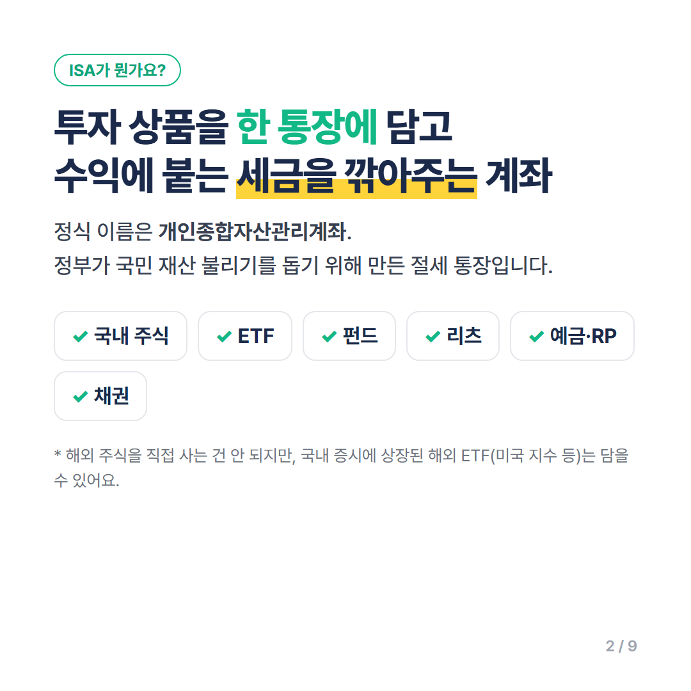
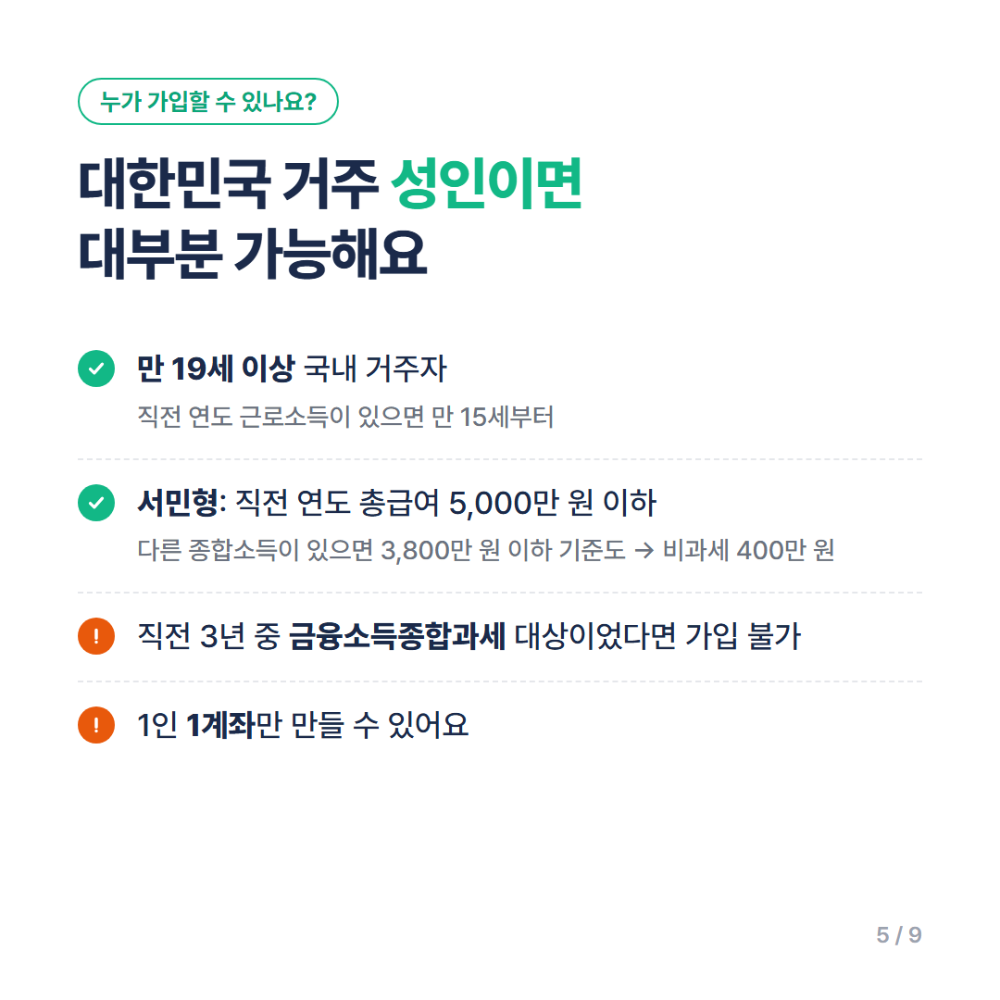
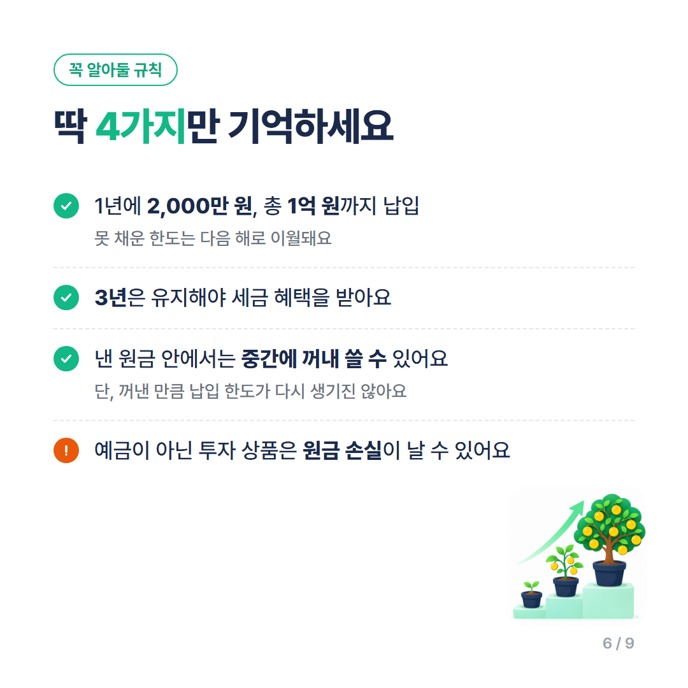
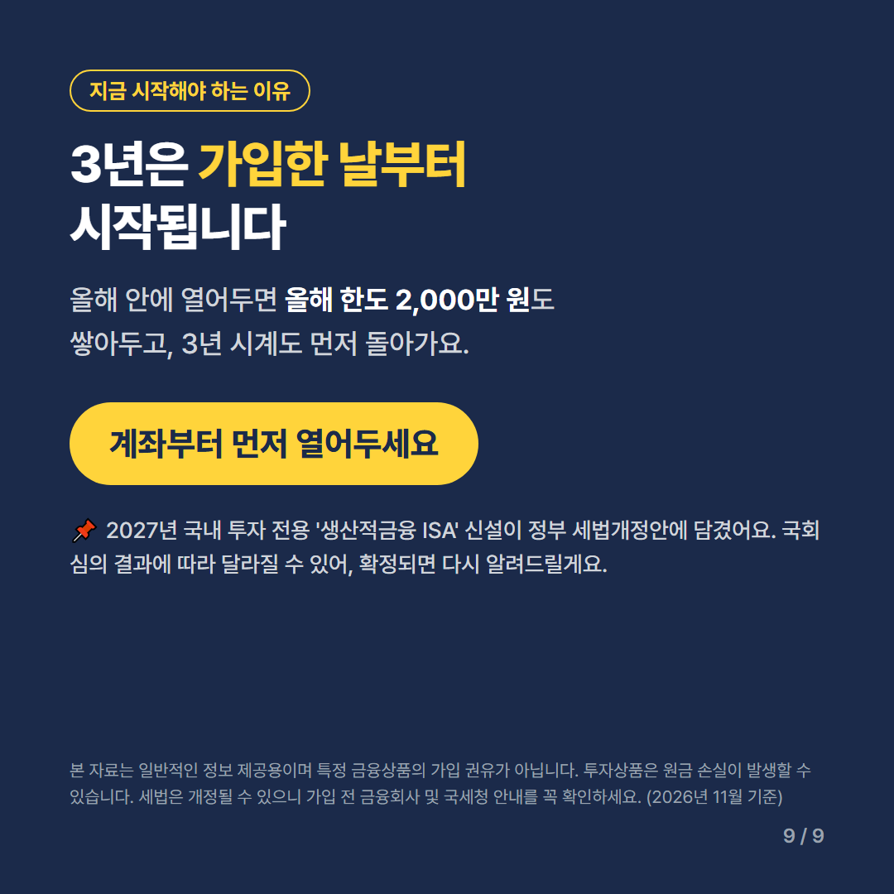

아직도 ISA
모르세요?
세금 아껴 주는 '만능 절세 통장'. 수익에 붙는 세금 15.4%를 0원으로 만드는 방법을 5분 만에 정리했어요.
- ISA는 예금·펀드·ETF를 한 통장에 담고, 그 수익에 붙는 세금을 깎아 주는 계좌예요.
- 3년 유지하면 과세 대상 순이익 200만 원까지 세금 0원(서민형 400만 원), 넘는 부분도 9.9%만 내요.
- 증권사·은행 앱이나 영업점에서 만들 수 있어요(비대면 가능 여부는 회사마다 달라요). 3년은 가입한 날부터 계산돼요.
손가락으로 넘겨 보세요







같은 수익, 다른 세금
* 이자·배당 등 과세 대상 수익을 손익통산한 순이익 기준. 9.9%는 지방소득세 포함 세율이에요. 국내 상장주식 매매차익은 원래 비과세예요.
내 수익이라면
세금은 얼마?
3년 동안 ISA 안에서 난 이자·배당 등 과세 대상 수익을 움직여 보세요.
누가, 어떻게,
무엇을 지켜야 할까요
만 19세 이상 국내 거주자
직전 연도 근로소득이 있으면 만 15세부터 가입할 수 있어요.
서민형: 직전 연도 소득 기준
근로소득만 있으면 총급여 5,000만 원 이하. 다른 종합소득이 있으면 종합소득금액 3,800만 원 이하 기준도 함께 봐요. 가입 후 국세청이 확인해 요건이 안 맞으면 일반형으로 바뀌어요.
1년 2,000만 원, 총 1억 원까지
못 채운 한도는 다음 해로 이월돼요.
3년은 유지해야 혜택
낸 원금 안에서는 중간에 꺼내 쓸 수 있지만, 꺼낸 만큼 한도가 다시 생기진 않아요.
금융소득종합과세 대상이었다면 불가
가입일이 속한 해의 직전 3개 과세기간 중 한 번이라도 대상이었다면 가입할 수 없어요. 전 금융회사 통틀어 1인 1계좌예요.
투자 상품은 원금 손실 가능
예금이 아닌 펀드·ETF 등은 손실이 날 수 있어요.
ISA, 어디서
어떻게 만드나요?
ISA는 운용 방식에 따라 3가지예요. 어디서 만들어도 세금 혜택은 같고, 1인 1계좌라 하나만 고르면 돼요.
중개형
주식·ETF를 직접 고르고 싶다면
국내 주식, ETF, 펀드, 채권 등을 내가 직접 사고팔아요 증권사 앱에서 비대면으로 개설하는 경우가 많아요 예금은 담을 수 없어요
신탁형
예금 위주로 안전하게 담고 싶다면
예금, 펀드 등 담을 상품을 내가 정해 금융회사에 맡겨요 은행 앱 또는 영업점에서 가입해요 상품마다 운용 보수가 있어요
일임형
고르기 어렵다면 전문가에게
내 성향에 맞춘 모델 포트폴리오로 금융회사가 운용해요 은행·증권사 앱이나 영업점에서 가입해요 일임 수수료가 있어요
신분증주민등록증 또는 운전면허증 본인 명의 휴대폰앱 설치와 본인 인증 본인 명의 은행 계좌비대면 개설 시 계좌 인증과 입금용 서민형이라면: 소득확인증명서홈택스 민원증명에서 '소득확인증명서(개인종합자산관리계좌 가입용)' 인터넷 발급
- 유형 고르기위 3가지 중 하나. 주식·ETF는 중개형, 예금은 신탁형
- 앱 설치 후 'ISA' 메뉴증권사·은행 앱에서 ISA 개설 메뉴를 찾아요
- 신분증 인증하고 개설서민형은 회사에 따라 개설할 때 고르거나, 일반형으로 만든 뒤 소득확인증명서를 내고 서민형으로 전환해요 (비대면 가능 여부는 회사마다 달라요)
- 입금하고 상품 고르기1년 2,000만 원까지, 한도 안에서 원하는 만큼 넣으면 돼요
혼자 하기 어렵다면, 편하게 물어보세요
어떤 유형이 맞는지, 서민형이 되는지, 앱에서 막혔을 때. 아래 버튼을 누르면 문구가 복사돼요. 이 링크를 받은 카톡방에 붙여넣어 보내 주시면 도와드릴게요.
만기 때 연금계좌로 옮기면
세금을 또 돌려받아요
만기 후 60일 안에 연금저축·IRP로 옮기면 옮긴 돈의 10%(최대 300만 원)를 연금 세액공제 대상에 더해 줘요. 한도를 다 쓰면 세금이 최대 약 40~50만 원 줄어요.
추가 공제 300만 원 × 13.2% = 39만 6천 원, 16.5% = 49만 5천 원. 16.5%는 총급여 5,500만 원 이하(근로소득만) 또는 종합소득 4,500만 원 이하. 실제 혜택은 낸 세금에 따라 달라요.
3년은 가입한 날부터
계산돼요
납입 한도는 매년 생기고, 못 쓴 한도는 다음 해로 넘어가요. 다만 투자 상품은 손실이 날 수 있으니 유형과 비용, 위험을 확인한 뒤 결정하세요. 나에게 맞는지 궁금하면 이 링크를 보내 드린 분께 편하게 물어보세요.
참고: 2027년 국내 투자 전용 '생산적금융 ISA' 신설이 정부 세법개정안에 담겼어요. 국회 심의 결과에 따라 달라질 수 있어, 확정되면 다시 알려 드릴게요.
기준과 근거 (확인일 2026-11-24)
2026년 11월 기준. 관련 법령(조세특례제한법)과 국세청·금융회사의 ISA 안내를 바탕으로 정리했으며, 세법은 개정될 수 있습니다. 비대면 가입 가능 여부와 취급 상품은 금융회사마다 다르니 가입 전 해당 회사 안내를 확인하세요.